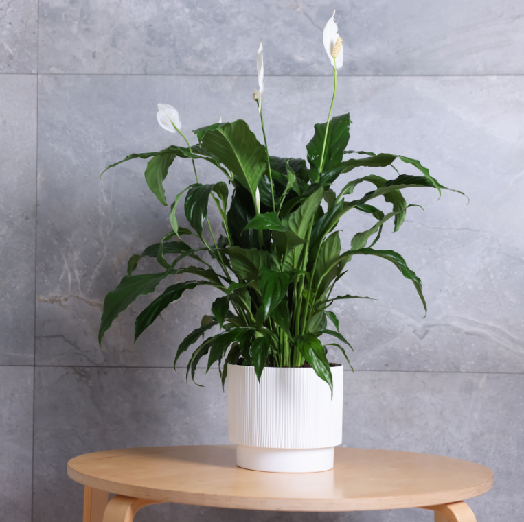

Potted Peace Lily on Stool
A lush green peace lily plant in a white pot placed on a light wooden stool against a tiled wall. The plant’s white blooms contrast beautifully with its dark green leaves, giving a calm and elegant look.
- 🪴 Peace lilies purify air and add fresh greenery to rooms.
- 🪑 Placing them on a stool elevates the plant for style and visibility.
- 🌸 Easy to care for and blends well with modern decor.
- ✨ Perfect for living rooms, bedrooms, or study corners.